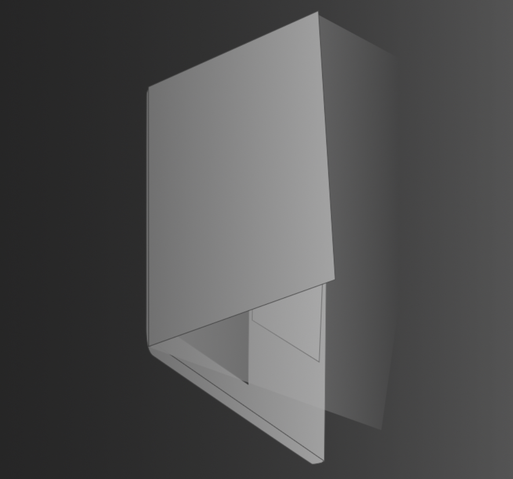

Optimization
NPUを、歌い飛ばせ。
Neural EngineとNPUに完全最適化。AI解析はまばたきする間に完了します。

Algorithm
NPUがなくても。
数学的アルゴリズムがCPUの限界を突破。旧世代機を救済する圧倒的パワー。
Pro Quality
1.2GBの、誇り。
一切の圧縮を排除した高品位データと連続音ロジックを凝縮。妥協のない「本物の声」を。
200MBの聖域。
動作メモリわずか200MB。マルチタスク時でも、バックグラウンドで軽快に歌わせることが可能です。
愛用した声と、共に。
声を乗り換える必要はありません。UTAU音源への最適化により、使い慣れたライブラリが蘇ります。
投げる、即、歌う。
Zipを投げ込む、その瞬間にキャラクターの声が響く。これが2026年の「楽器」です。